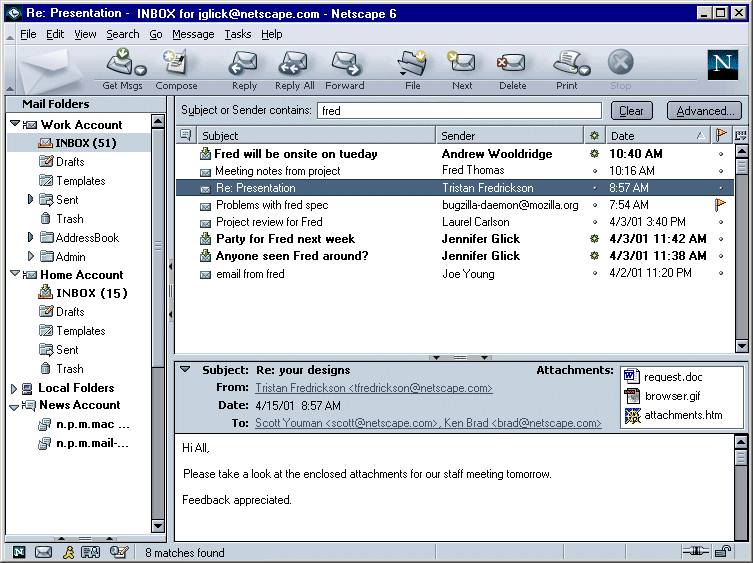
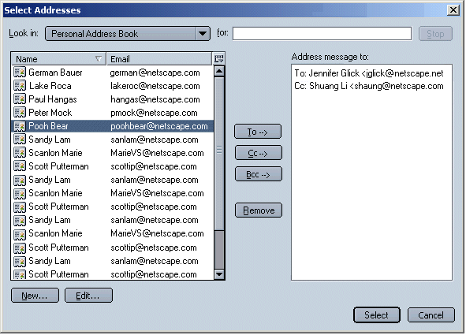
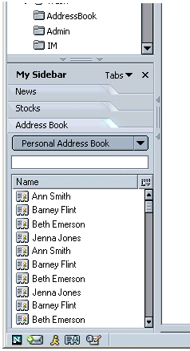
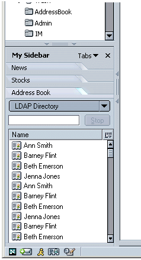

|
MachV/Mozilla: Mail & News |
UI
Specification
|
|
Quick Search in Mail |
Last Modification: |
|
Author: Jennifer Glick |
Status: Mostly Complete |
||||||||||||
|
Quicklinks: Menu |
Feature Team
|
Bug 63573 - RFE: have a "search engine like" interface for searching mail news.
Provide a method for users to perform a basic and easily accessible search in Three Pane Mail and News.
Select "Search Bar" from the View: Show/Hide menu in Three Pane Mail.
A Search Bar above the column headers area opens.
The default is open. Users who do not use the feature can close the bar. Mail should remember how the user last left the bar (open vs. close).

The search is performed on the folder that is selected in the left pane.
A "contains" search on "Subject" or "Sender" is performed by default.
Future RFE Feature: Using Preferences, users can change the search to "Subject contains:" or "Sender contains:". The text displayed in the Search Bar should reflect the current setting ("Subject or Sender contains: vs. "Subject contains:", vs. "Sender contains:"). Note: Exact location of the pref is TBD.
As the user types text into the text field, the Thread Pane updates to display only those headers that match the query. Typing more text in the field refines the search (only searches the remaining items), while deleting characters restores those headers that now match the query. Clearing all the text from the field restores the full contents of the selected folder in the Thread Pane.
The search results are displayed using the same sort order that was set by the user before the search occurred. While search results are displayed, the sort order can be changed.
Selecting a different folder, newsgroup or account cancels the search. For example:
Once the users starts typing in the text field, no message in the Thread Pane should be selected and the Message Pane should be empty.
Clicking on the "Advanced..." button opens the full "Search Messages" dialog.
Clicking on the "Clear" button clears the search field. Only enabled when text is currently entered.
The results of the search are displayed in the Thread Pane. The number of matches found are displayed in the status bar.

Most all actions available on messages should be available to the search result messages. Actions taken on search results are permanent (same as non search results messages). For example:
No Results Found. If no matching items are found, the text, "No matches found." is displayed in the Status bar. The Message pane, if open, is empty.
Tab. Tabbing in Three Pane Mail works clockwise, so if the search field has focus, a tab will cause the Thread Pane to have focus.
"Get Msg". If the user pulls or receives new messages while search results are being displayed, and any of the new messages match the search criteria, the Thread Pane displaying the matching results is NOT updated. If the user were to perform the search again, though, the new messages would be displayed.
Drag and Drop. Users are able to drag and drop results of the search to other folders. Just like drag and drop in the Three Pane Mail, a Move is preformed. Accelerator plus drag and drop is a copy. When drag and dropping newsgroup messages, a copy is always performed.
News. This feature should work the same in Newsgroups, although it may be a little slower if there are a large number of postings.
Clicking into or Tabbing into. Clicking into the search field or tabbing into the search field causes any existing text to be highlighted. This parallels the browser behavior of clicking or tabbing into the URL field.
If the user performs a search, selects a message found in the search, and then clears the search, the message selected should remain selected.
The user performs a search, no message is selected in search and
user clears search. No message should be selected when the search is
cleared. The thread pane should scroll to the first new message (or
most recent message if no new messages are available).
The user performs a search. A message has secondary focus in search
view (lighter highlight color). The user clears the search. The
message retains secondary focus when search cleared.

"Stop" button is enabled while a search is in progress.
Address Book in the Sidebar spec.
If a local Address Book is selected:

If an LDAP Directory is selected, "Stop" button is available while the search is in progress.
